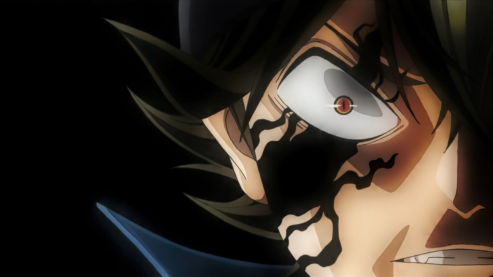

- Back
- Horror
- Home
Ayuda
Kanina habang masaya akong nanood ng tv ay may biglaang kumatok sa pintuan NG aming bahay.... . Pagbukas ko NG pintuan ay agad Naman na nagpakilala sakin Ang mga taong nagsikatok sa aking bahay mga taga Barangay at DSWD daw sila... . Maya maya ay may inabot na form sa akin agad konamang binasa ang title NG form "Social Amelioration Card".... . Agad pumasok sa aking isipan Ah...!!! ito na siguro yung sinasabi nilang ayuda na 5,000 to 8,000 pesos mula sa gobyerno.... . Sa tuwa ko ay dali dali kong finil-up'an ang mga details na kailangan na may ngiti at excitement. Saka ko inabot kay kapitan ang form na may halong kilig pa sa aking nararamdaman... . Dali daling binuksan ni Madam DSWD yung bag na pinaglalagyan ng pera. Kumuha ng isang bugkos saka nagbilang... . . One...!!! . . Two...!!! . . Three...!! . . Four...!! . . Five...!! . . Six...!! . . Seven...!! . . Eight...!!!! . . Sabay sabay pa kami na nagbilang... Ako...!! si kapitan...!! yung taga DSWD..!!! mga kasamang konsehal at pulis...!!! . Nung inabot na sa akin yung pera... biglang tumahol yung alaga kung aso na si bantay... Ayunn...!!! . . . . . . . . . . . . . . . . . . Sa gulat ko sa tahol ng aso ay bigla akong nagising...!!! Lintek panaginip lang pala...!!! Diko man lang nahawakan kahit sa panaginip...!!!